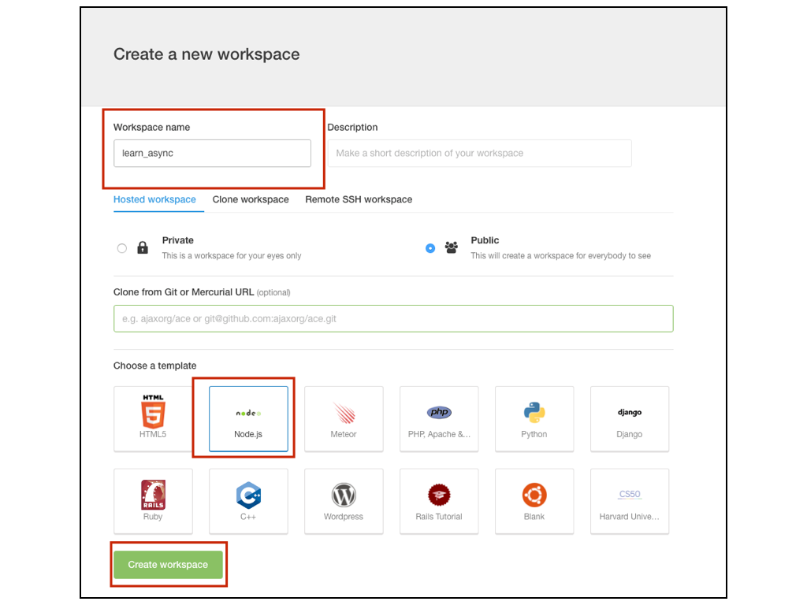

サンプルコードを通じて非同期処理について理解する
先ほど飲食店でのオペレーションを例に非同期処理の概念を説明したのでその例えをふまえて
- 注文する
- 注文内容を確認する
- お会計の金額を計算する
- 調理を行う
- 調理が完了したのでお客さんを呼ぶ
という一連の流れについて、JavaScriptのサンプルコードを示しながら非同期処理について説明をしていきます。
作業用の設定を行う
サンプルコードを実行する時に
- ローカルのWebサーバー機能
- jQuery
を念頭に置いて資料を作ってありますので各自の環境に応じて以下の設定を行ってください
Cloud9を利用してる場合
- ワークスペースの名前はひとまずlearn_asyncという名称で作成してください。

ワークスペースの設定が完了すると初期設定段階でjQueryとローカルのWebサーバー機能がそのまま利用できる状態になってます。
詳しくはCloud9というクラウド上の環境を利用するのページのコマンドを入力してサーバー機能を立ち上げるの項目を参照してください
HTMLを修正する
初期段階のHTMLは不要な記述が多いので、clientフォルダの中のindex.htmlを開いて以下の内容に書き換えてください。
<html>
<head></head>
<body>
<script src="/js/jquery.min.js"></script>
<script type="text/javascript" src='/js/main.js'></script>
</body>
</html>
Mac/Windows上でNode.jsの環境を利用する場合
- ローカルのWebサーバー機能
- jQuery
を利用するために必要なnpm モジュールをインストールします。
{
"name": "learn_async",
"version": "1.0.0",
"description": "",
"author": "",
"license": "MIT",
"dependencies": {
"gulp": "^3.9.0",
"gulp-webserver": "*",
"jquery": "^2.1.3"
}
}
npm install
HTMLを作成する
index.htmlを作成して以下内容を記述します
<html>
<head></head>
<body>
<script type="text/javascript" src='/node_modules/jquery/dist/jquery.js'></script>
<script type="text/javascript" src='/js/main.js'></script>
</body>
</html>
Webサーバー機能を利用するための設定
gulp-webserverを利用してWebサーバーを立ち上げるためにgulpfile.jsを作成して以下内容を記述します
var gulp = require('gulp');
var webserver = require('gulp-webserver');
gulp.task('webserver', function() {
gulp.src('./')
.pipe(webserver({
livereload: false,
port: 9000,
fallback: 'index.html',
open: true
}));
});
gulp.task('default', ['webserver']);
gulpfile.jsを作成したら、以下コマンドを実行します
./node_modules/gulp/bin/gulp.js
Webブラウザを開いて以下にアクセス出来るのを確認してください。